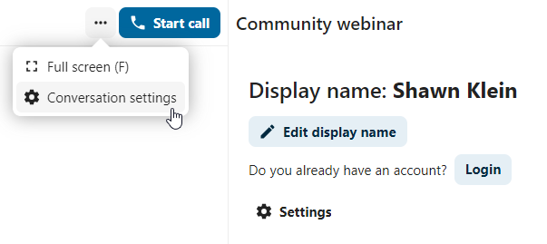

Rejoindre un appel ou une discussion en tant qu’invité
Nextcloud Talk offre des appels audio/vidéo et une messagerie instantanée à l’intérieur de Nextcloud. Il est accessible à travers l’interface web aussi bien que depuis des applications mobiles.
Vous pouvez en savoir plus sur Nextcloud Talk sur notre site web.
rejoindre la discussion
If you received a link to a chat conversation, you can open it in your browser to join the chat. Here, you will be prompted to enter your name before joining.

You can also change your name later by clicking the Edit button, located top-right.
{kind=link}
Les réglages de votre caméra et de votre microphone se trouvent dans le menu « Réglages ». Vous y trouverez également une liste de raccourcis que vous pouvez utiliser.

Rejoindre un appel
Vous pouvez lancer un appel à tout moment en cliquant sur le bouton « Commencer l’appel ». Les autres participants seront avertis et pourront se joindre à l’appel. Si quelqu’un d’autre a déjà commencé un appel, le bouton se transforme en bouton vert « Rejoindre l’appel ».

Avant de rejoindre effectivement l’appel, vous verrez une page de vérification des périphériques, où vous pourrez choisir la bonne caméra et le bon micro, activer le fond flouté ou même rejoindre l’appel avec un appareil quelconque.

Pendant un appel, vous pourrez trouver les paramètres de caméra et de micro dans le menu ... de la barre supérieure.

Pendant un appel, vous pourrez désactiver votre micro et votre caméra avec les boutons au-dessus à droit, ou utiliser les raccourcis ``M``pour désactiver le micro et ``V``pour désactiver la vidéo. Vous pouvez aussi utiliser la barre espace pour activer/désactiver le mode muet. Quand vous êtes muet, presser la barre espace désactiver le mode muet et vous pouvez parler jusqu’à ce que vous relâchiez la barre espace et vice versa.
Vous pouvez masquer votre vidéo (utile lors d’un partage d’écran) avec la petite flèche juste au-dessus du flux vidéo. Faites-la réapparaître avec cette même petite flèche.
Plus de paramètres
Dans le menu de conversation, vous pouvez choisir de passer en plein écran. Vous pouvez également le faire en utilisant la touche « F » de votre clavier. Dans les paramètres de la conversation, vous trouverez des options de notification et la description complète de la conversation.
{kind=link}